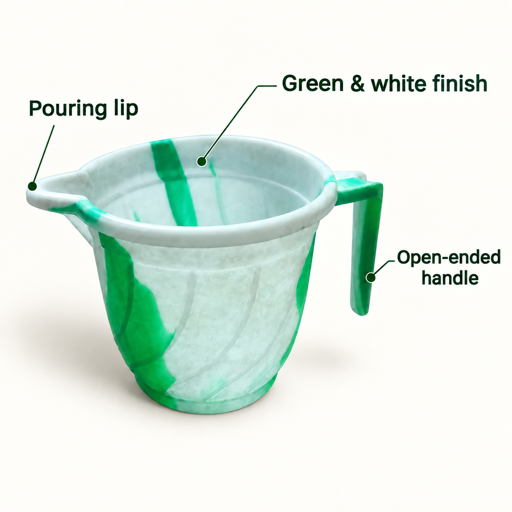

货映 · 真实网页照片测试
原图与候选图对照 · 4 张素材。检查结果仅覆盖记录项目，最终采用由卖家决定。
绿白带柄水舀 · main
有待核对保留原物体的白底候选
- 商品一致性 右侧悬空长柄、左侧导流口与主要绿色纹路保留；候选的表面斑点和细纹明显更清楚，低清原图不足以验证这些新增细节。
- 文字 原图无可见品牌文字，本图没有增加说明文字。
- 卖点依据 没有增加容量、材料、认证或功能参数。
- 视觉 物体完整可见，白底与接触阴影自然，原背景已移除。
- 使用范围 仅作白底图功能测试，尚未核验任何电商平台审核规则。
绿白带柄水舀 · scene
有待核对同角度放在干净浅灰台面，无新增配件
- 商品一致性 长柄悬空端、左侧导流口与主要绿白分布仍可辨认；表面细小斑点和纹理较原图发生重构，不能仅凭低清原图确认全部一致。
- 文字 未增加图中文字。
- 卖点依据 使用的描述只涉及可见颜色、开放式长柄和导流口，未增加容量、材质、食品接触或认证声明。
- 视觉 场景背景简洁，无额外配件；图形文字清楚且主体完整。
- 使用范围 符合本次功能测试用途；没有执行或承诺平台上架。
绿白带柄水舀 · feature_cn
有待核对以可观察外形做中文特点图
- 商品一致性 长柄悬空端、左侧导流口与主要绿白分布仍可辨认；表面细小斑点和纹理较原图发生重构，不能仅凭低清原图确认全部一致。
- 文字 中文三处文案分别为绿白相间、开放式长柄、导流口设计，均可读。
- 卖点依据 使用的描述只涉及可见颜色、开放式长柄和导流口，未增加容量、材质、食品接触或认证声明。
- 视觉 商品完整，标注线指向对应区域，主要文字可读；属于候选设计而非实拍证据。
- 使用范围 符合本次功能测试用途；没有执行或承诺平台上架。
绿白带柄水舀 · feature_en
有待核对把中文说明改为英文，保留商品与布局
 原图参考
原图参考
候选 v1 · 保存图片- 商品一致性 长柄悬空端、左侧导流口与主要绿白分布仍可辨认；表面细小斑点和纹理较原图发生重构，不能仅凭低清原图确认全部一致。
- 文字 英文为 Green & white finish、Open-ended handle、Pouring lip；未发现中文残留，长文已换行且没有明显截断。
- 卖点依据 使用的描述只涉及可见颜色、开放式长柄和导流口，未增加容量、材质、食品接触或认证声明。
- 视觉 商品完整，标注线指向对应区域，主要文字可读；属于候选设计而非实拍证据。
- 使用范围 符合本次功能测试用途；没有执行或承诺平台上架。